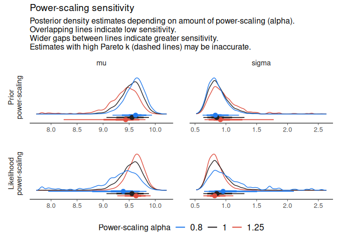
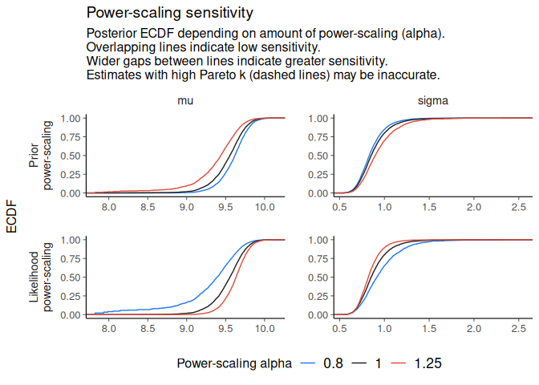
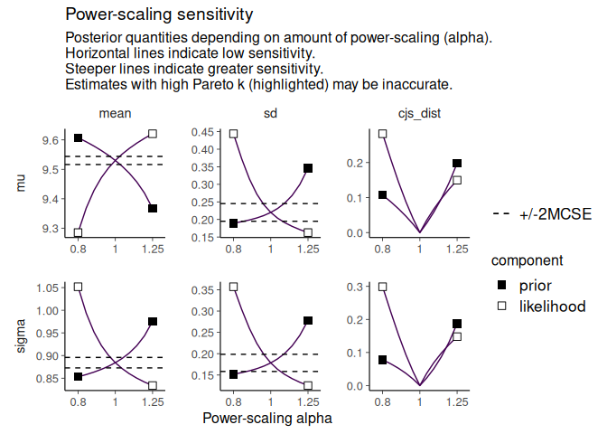

Overview
priorsense provides tools for prior diagnostics and sensitivity analysis.
It currently includes functions for performing power-scaling sensitivity analysis on Stan models. This is a way to check how sensitive a posterior is to perturbations of the prior and likelihood and diagnose the cause of sensitivity. For efficient computation, power-scaling sensitivity analysis relies on Pareto smoothed importance sampling (Vehtari et al., 2024) and importance weighted moment matching (Paananen et al., 2021).
Power-scaling sensitivity analysis and priorsense are described in Kallioinen et al. (2023).
Installation
Download the stable version from CRAN with:
install.packages("priorsense")Download the development version from GitHub with:
# install.packages("remotes")
remotes::install_github("n-kall/priorsense", ref = "development")Usage
priorsense works with models created with rstan, cmdstanr, brms, R2jags, or with draws objects from the posterior package.
Example
Consider a simple univariate model with unknown mu and sigma fit to some data y (available viaexample_powerscale_model("univariate_normal")):
data {
int<lower=1> N;
array[N] real y;
}
parameters {
real mu;
real<lower=0> sigma;
}
model {
// priors
target += normal_lpdf(mu | 0, 1);
target += normal_lpdf(sigma | 0, 2.5);
// likelihood
target += normal_lpdf(y | mu, sigma);
}
generated quantities {
vector[N] log_lik;
real lprior;
// log likelihood
for (n in 1:N) log_lik[n] = normal_lpdf(y[n] | mu, sigma);
// joint log prior
lprior = normal_lpdf(mu | 0, 1) +
normal_lpdf(sigma | 0, 2.5);We first fit the model using Stan:
library(priorsense)
normal_model <- example_powerscale_model("univariate_normal")
fit <- rstan::stan(
model_code = normal_model$model_code,
data = normal_model$data,
refresh = FALSE,
seed = 123
)Once fit, sensitivity can be checked as follows:
Sensitivity based on cjs_dist
Prior selection: all priors
Likelihood selection: all data
variable prior likelihood diagnosis
mu 0.43 0.64 potential prior-data conflict
sigma 0.36 0.67 potential prior-data conflictTo visually inspect changes to the posterior, use one of the diagnostic plot functions. Estimates with high Pareto-k values may be inaccurate and are indicated.
powerscale_plot_dens(fit)
powerscale_plot_ecdf(fit)

In some cases, setting moment_match = TRUE will improve the unreliable estimates at the cost of some further computation. This requires the iwmm package.
Contributing
Contributions are welcome! If you find an bug or have an idea for a feature, open an issue. If you are able to fix an issue, fork the repository and make a pull request to the development branch.
References
Noa Kallioinen, Topi Paananen, Paul-Christian Bürkner, Aki Vehtari (2023). Detecting and diagnosing prior and likelihood sensitivity with power-scaling. Statistics and Computing. 34, 57. https://doi.org/10.1007/s11222-023-10366-5
Topi Paananen, Juho Piironen, Paul-Christian Bürkner, Aki Vehtari (2021). Implicitly adaptive importance sampling. Statistics and Computing 31, 16. https://doi.org/10.1007/s11222-020-09982-2
Aki Vehtari, Daniel Simpson, Andrew Gelman, Yuling Yao, Jonah Gabry (2024). Pareto smoothed importance sampling. Journal of Machine Learning Research. 25, 72. https://jmlr.org/papers/v25/19-556.html